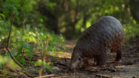
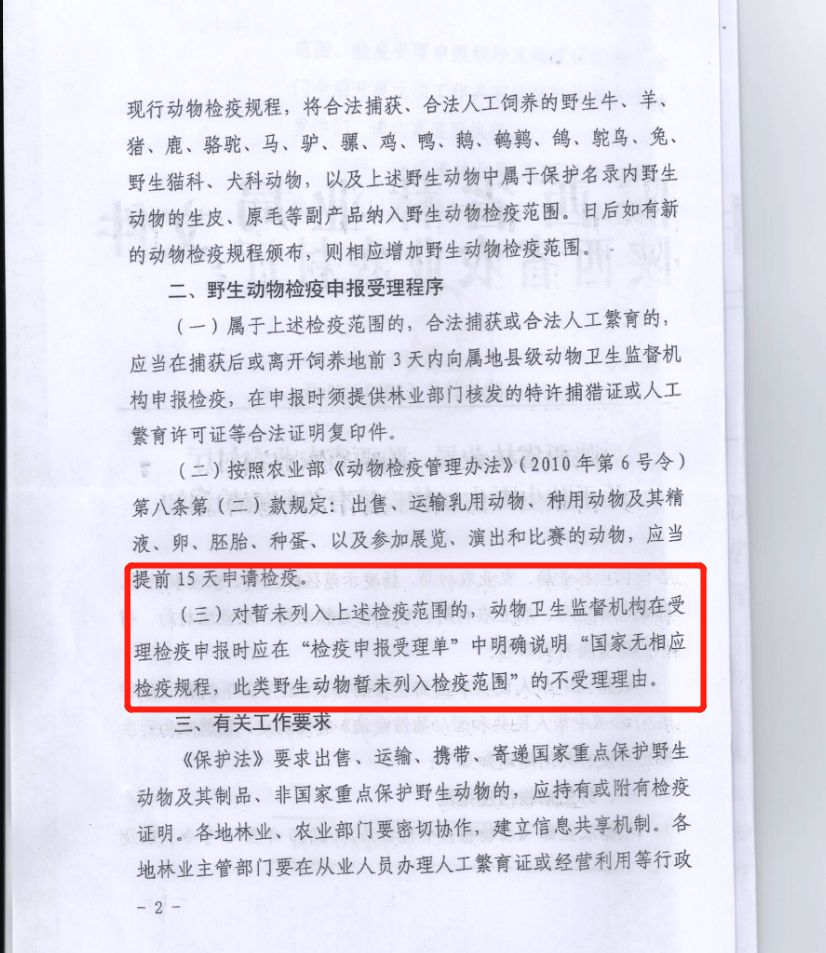

全面禁食？2500万网红竹鼠等待判决
原文链接 备份链接 图片来源：视觉中国 记者：刘林 “ 在全面封控的过程中，竹鼠养殖户们对未来仍抱有期望，但全面禁止食用“三有动物”的决定可能会给长期处于灰色地带的竹鼠养殖业带来致命一击。 ” 过去两年走红网络的竹鼠，因为被点名为“可能携 …

还没等到科学家研究出新冠病毒的确切宿主，世界卫生组织已判定这场肆虐全球的疫情具有大流行病（ pandemic ）特征，距离武汉第一次通报不足百日。
500 年前，疑似骆驼的源头在旧大陆出现到 18 世纪中叶成为大流行病，天花经历了百年时间；1959 年开始在刚果局部出现，到 20 世纪 80 年代成为全球性流行病，源起黑猩猩的艾滋病花了 20 年；这一次，新冠肺炎更加迅猛……
如 SARS 一般，疫情爆发后人们开始谴责中国滥食野生动物的陋习，「禁食令」紧急颁布，非法野生动物交易被全面禁止。
叶晖从 90 年代开始养殖果子狸，有 20 多年的养殖经验，还同时经历过 SARS 后的动荡期，直到 2004 年果子狸获得了合法养殖地位。
疫情期间接到县里禁售通知，叶晖开始夜不能寐，对于今后还能够继续养殖忧心忡忡。在和其他养殖户一起写了请愿书后，50 岁的叶晖说自己还要坚持下去。
竹鼠养殖大户陈嵘还继续雇佣 6 个工人喂养圈内的 5000 只「小可爱」，这位将华农兄弟带入竹鼠养殖圈的 80 后，竹鼠生意在「网红」的东风日渐红火，但「禁食令」之下每个月 4 万元的饲养成本让他不得不去考虑「最坏的打算」。
央视《致富经》节目中曾经记录，一名竹鼠养殖创业者的养殖动机是，来自广州的餐馆老板主动来到农村询问竹鼠货源，原因是「明天要来的一桌尊贵客人，点名要吃竹鼠。」
当公共安全危机与特种经济养殖产业相遇，如何取舍成为一道横跨 17 年的未解难题，而让题面逐渐复杂、反反复复的原因，并非无迹可寻。

从打猎到养殖、非法盗猎
陈嵘印象中，竹鼠养殖产业的第一次爆发是在央视《致富经》播出的一期关于竹鼠养殖的节目之外。甚至，因为也是一个鼠年，他记得很清楚是在 2008 年。
2006 年，24 岁的陈嵘初为人父，离开打工 7 年的广州回到江西赣州。
陈嵘如同很多养殖户一样，在各种宣传返乡养殖创业的风气里决定试一试。
他听闻附近有一位竹鼠老养殖户，已经养了 6 年，便去买了一些种苗回来。

央视《致富经》关于竹鼠养殖节目截图
在陈嵘的童年记忆里，竹鼠并不陌生。80 年代，上山打猎在江西农村很常见，野生竹鼠便常常是农村猎人的战利品，成为那个物质并不丰富年代很多家庭「打打牙祭」的盘中餐，但往后却逐渐消失隐蔽在山林之中。
从全球来看，二战以后工农业和商业快速发展对生态环境造成的灾难性后果愈益显现。
1970 年代以后，世界上许多国家和地区通过立法保护野生动物及其栖息地方面。
我国在 1989 年，由林业部门起草的第一部《野生动物保护法》正式出台，但与「保护」力度相比，「利用资源」之味更浓。
学者们普通认为，将「合理利用野生动物资源」作为该法的立法目标之一，使得我国野生动物保护法充满矛盾，不但无法有效遏制滥捕滥杀野生动物的犯罪，同时也造成野生动物驯养、繁殖和利用过程中对动物的巨大伤害。
例如，活熊取胆和虎（虎骨虎皮虎肉）等的商业性利用一时兴起，而严重虐待野生动物的驯兽和动物表演行业更是日益庞大，屡禁不止。
世界动物保护协会科学家、动物学博士孙全辉认为，当初的立法具有特定时期的必要性，但主管部门主张用人工养殖来填补野外种群的思路，「事实证明是不对的。」
事实上，林业主管部门不仅负责野生动物保护，同时也是野生动物养殖许可证的下发部门，是典型的「既是裁判员又是运动员」。
此背景下，东北虎、穿山甲、黑熊、蛇、果子狸等野生动物产业链急剧扩张。
以叶晖 20 多年的经验，他告诉「偶尔治愈」，果子狸养殖成熟并不容易，需要数年的精心培育，但是市场供不应求，村里一些「好吃懒做」的年轻人还是会铤而走险猎捕野生果子狸去出售。
「打着养殖的幌子盗猎野生动物」的成为地下市场的「漂白」机会，间接导致了野生动物种群灭绝风险增高。
穿山甲是目前地球上现存的唯一麟甲类哺乳动物，但近几十年间，却因为被营销为「滋补神品」而成为非法捕猎、走私的热门物种。
由于特殊的饮食习性和复杂疾病，全世界至今都没有突破穿山甲人工养殖技术壁垒，所有人都在问「尚没有成熟的技术和养殖种群，但是交易却一直在进行，穿山甲是哪里来的呢？」
据国际野生物贸易组织（简称 TRAFFIC ）估计， 2000 年至 2013 年间有 100 万只穿山甲惨遭盗猎。
穿山甲是公认的全世界非法交易最严重的野生哺乳动物。2014 年，穿山甲被世界自然保护联盟（ IUCN ）濒危物种红色名录收录，专家预测将在十年内灭绝。
直到 2017 年，《濒危野生动植物国际贸易公约》（ CITES ） 183 个缔约国表决通过的针对穿山甲全部八个物种的国际交易禁令开始生效。
尽管如此，来自执法部门的数据显示，每年仍有大量的野生穿山甲非法运输被查获，暴利让犯罪分子铤而走险。
而国内六大持证养殖穿山甲的基地，屡次被动物保护组织和媒体质疑不具备养殖条件，多批被查获的穿山甲被送往基地寄养后全部死亡，甚至基地驯养人还被查出与穿山甲走私有关。

图源：BBC纪录片《穿山甲：被捕杀最多的动物》
东北虎的例子，则证明了养殖品种放归野外也是个遥不可及的待证命题。
1993 年，国务院发布通知，禁止犀牛角和虎骨的一切贸易活动。
20 多年后，媒体报道国内多个老虎养殖基地私人老板因老虎太多，却又不被允许贸易而陷入困境，引发人们关注。
2018 年 10 月，国务院下发《关于严格管制犀牛和虎及其制品经营利用活动的通知》，允许犀牛和虎及其制品在特殊情况下，经批准后可以交易、使用，这些特殊情况包括科普教育、医学研究和文化交流。
此举引发国际动物保护组织强烈抗议。
「这无疑是给大量非法市场中的犀牛角和虎骨库存进入合法市场『漂白』的机会。「动保组织指出，解禁医用犀牛角和虎骨，将对濒临灭绝的野生犀牛和老虎种群带来毁灭性后果。」
当时果壳网主笔、科学松鼠会成员@游识猷撰长文指出，相信「药用价值」的人，往往也相信「野生动物的药效好过人工养殖的药效」，即使合法养殖，也无法阻挡消费者们对「更好的野生品」的追捧。此举将给本已濒临灭绝的老虎与犀牛带来灭顶之灾。
反对声音终于促使林业部门按下了暂停键，《通知》下发 2 个月后国家林草局发言人回应称，「中国对野生动物保护的立场是坚定、主动的，也是一贯的。中国作为濒危野生动物物种国际贸易公约的缔约方，在打击野生动物走私、非法贸易方面一直不遗余力。」
从鼓励养殖到严禁贸易，从有条件放开到彻底收紧，除了仍在濒危状态下的野生东北虎和犀牛，只留下仍在寻找《致富经》的养殖户被政策反复拉扯。
「没有买卖就没有伤害，」在孙全辉看来，最需要纠正的仍然是人们对于野生动物的观念和态度，从生态的角度去思考问题，而不是作为一种资源去利用。

「网红」和吃野味误区
在自媒体时代，人人都能在一夜之间成为「 IP 」，以拍摄田园生活和竹鼠养殖为主要内容的自媒体华农兄弟便是其一。
通过视频，网友第一次看到农村养殖的内幕，而远离城市喧嚣的农村田园风貌，甚至连「吃竹鼠的 100 种理由」的朴素表达，都让华农兄弟在各平台迅速坐拥百万粉丝。
观众们接受的设定是，作为合法的人工养殖动物，竹鼠的最终结局天然地是被食用，至于 100 种理由的排列组合，是无关痛痒的。
不过，对于华农兄弟来说，他们的初心不过是让更多的人了解到竹鼠的美味，以期提高销量。
一直以来，中国特别是南方地区爱吃野味成为全世界热议的话题。
但孙全辉注意到，很多人都觉得吃野味并不是因为习惯，而是猎奇心理，甚至是随着产业发展而被营销出来的「千百年野味文化」。
文化学者崔岱远就曾在疫情后的一场关于「舌尖上的野生动物」谈话中提及，古人其实尝试过很多东西，但经过千百万年，能够保留、驯养下来的才是能吃、好吃的东西。
「如果今天有人去吃野猪，就会发现它的口感又柴又硬，没有家猪好吃。」
崔岱远还辟谣道，很多人认为野生动物是珍贵食材，似乎是皇宫贵族才得以享用，因此花大价钱去尝鲜。
「但实际上研究明清历史可以发现，皇帝吃的东西非常讲究，而且他们非常惜命，不会轻易尝试特殊食材。《火烧圆明园》中桌上摆放了100多种菜，其实是为了混淆视听，不让外人了解皇上的饮食习惯，以保证自己的饮食安全。」

华农兄弟发布的烤竹鼠视频截图
新冠疫情发生之后，人们将对病毒的恐惧划为对野味产业链的憎恨。此后，华农兄弟的视频中未再出现竹鼠，不过凭借前期积累的粉丝，他们的网店还有竹笋等其他周边产品。
华农兄弟选择沉默，但更多的养殖户不得不因为面临失业甚至破产危机而大声疾呼。
十多年后，张嵘已是江西省内最大规模的竹鼠养殖户，从 1 月 26 日起，市场监管总局、农业农村部、国家林草局联合发布《关于禁止野生动物交易的公告》，再也没有卖出过一只竹鼠。
而与此同时， 6 位工人的工资、 5000 只竹鼠的饲料却不能随之按下暂停键，张嵘为此每个月需要 4 万元的开销。
3 月 2 日，张嵘朋友圈转发了一份倡议书，号召来自全国等地的竹鼠养殖户登记信息，之后这份收集好的数据将会被代表上交至主管部门。
倡议书写道：「全国的兄弟姐妹们，在这一个多月中，我们竹鼠养殖业面临着有史以来最大的困境。」
「几乎所有养殖户都有贷款，现在『一刀切』让我们养殖户无法接受，都在等待最终的结论，到底能不能继续养。」
张嵘所谓的等待指的是，按照 2 月 24 日人大常委会通过的《关于全面禁止非法野生动物交易、革除滥食野生动物陋习、切实保障人民群众生命健康安全的决定》，如果被列入畜禽遗传资源目录的动物，将属于家畜家禽，适用畜牧法的规定。
但是，对于能否被列入目录，各个省尚未明确指定时间。在此之前，按照 2018 修订的目录，包括猪、鸭、鹅等常见的畜禽品种和后来增修的敖鲁古雅驯鹿、吉林梅花鹿、中蜂、东北黑蜂、新疆黑蜂、福建黄兔、四川白兔等共 159 个品种。
果子狸、蛇、竹鼠等目前人们的养殖品种均不在其中，但全国各地都在近年聚集了数百上千的规模养殖户，成为此次风波中影响最大的品种。
这样的悬而未决， 17 年前叶晖就经历过。在他的记忆中，那一次更为严格， SARS 病毒宿主是果子狸的消息传来，主管林业部门要求所有养殖户停止交易，并要求一旦果子狸死亡，只能就地填埋，不可以做其他用途。
据《法制日报》 2003 年 5 月报道，时任国家林业局法规司司长陈根长称，针对一些地方滥食野味屡禁不止的现象，《野生动物保护法》的修改将很快启动，将对禁食野味作出明确的法律规定，并有望以最快的速度通过。
陈根长还回忆，1998年，我国修改《森林法》时，他曾接到许多国外来电，呼吁增加禁食野生动物的条款，国内也有专家学者提出应加入这一条款，但遭到多数人反对，原因是食野味在我国已有千百年历史。
但十多年之后回首发现，2004 年对于《野生动物保护法》的修订结果是，禁止食用野生动物的博弈最终仍然是以失败告终。
彼时，叶晖和果子狸养殖户同样写了请愿书，一层一层往上递。「差不多停了两年，（县里）只补贴了几百块，到了 2005 年开始没人管了，（养殖户）就继续养了。」
更准确一点的话， 果子狸获得合法养殖地位的时间是 2004 年 10 月，与 SARS 流行几乎是前后脚。
当时，国家林业局出台《关于促进野生动植物可持续发展的指导意见》，包括果子狸、梅花鹿、非洲鸵鸟等在内的 54 种陆生野生动物进入「商业性经营利用驯养繁殖技术成熟的陆生野生动物名单」。
简言之，只要经过人工繁殖驯养并在卫生部门鉴定许可后，包括果子狸在内的这 54 种陆生野生动物就可以人工饲养，合法进入市场，成为老百姓的盘中餐。
据中新网当时的报道，记者向国家林业局人士提及如何看待果子狸是 SARS 病毒的载体问题，回应称，「目前我国并没有禁止果子狸的养殖，暂时我们也没有制订这方面政策的意向。」
当时，隶属国家林业局保护司动植物管理处的回应人士称，「我们（林业部门）的工作是关于物种的保护与利用，在果子狸问题上我们一定会配合卫生部门做好相应工作。」
这背后，是目前我国对野生动物的管理权限复杂的一个缩影。

动物检疫与公共卫生
尽管前有 SARS 后有新冠，但在半山腰住了大半辈子的叶晖并不觉得果子狸危险， 「这么多年，我也没听说哪个养殖户被传染的。」
在张嵘眼里，比竹鼠更干净的养殖动物还没见过，「不像鸡瘟、猪瘟，养竹鼠这么多年从未出现过瘟病。」
很多人知道，科学研究虽然证明，蝙蝠才是 SARS 病毒的源头宿主，果子狸似乎沉冤得雪。但未被注意到的后半句是，果子狸仍然是 SARS 病毒重要的中间宿主之一，是病毒从蝙蝠传染到人类不容忽视的环节。
就连镜头下「漂亮」的竹鼠，也被证实和人类一同是马尔尼菲蓝状菌的主要宿主，存在感染给人类的风险。
即便是早已经驯养千年的鸡鸭猪羊，在相对完善的检验检疫流程下，禽流感、布病等人畜共患病依然是值得警惕的公共安全隐患。
孙全辉告诉「偶尔治愈」，特种经济养殖动物对公共安全的威胁在于，检验检疫的技术和流程都严重缺失，无法达到真正的卫生检疫作用。
叶晖和陈嵘向「偶尔治愈」证实，他们对圈舍的防疫措施基本靠自己的养殖经验，主管部门偶尔上门检查的只有是否仍在养殖。
2014 年，养殖竹鼠 8 年后，陈嵘被通知可以向主管林业部门申请养殖许可证，但是一旦出售则需要向兽医部门开具检疫证明。
《动物防疫法》规定动物检疫由农业部门负责，目前有产地检疫规程的只有猪、 家禽、反刍动物、马属动物、犬、猫、兔、蜜蜂、鱼虾贝类、实验用食蟹猴等 10 种动物。
换言之，竹鼠等特种经济养殖动物长期以来处于防疫真空地带。
近年来，竹鼠养殖规模的扩大，多个省份都针对此问题进行了讨论，但至今仍没有明确的结论出现。
各省文件中，大多采取的是开具「不受理理由」检疫证明或以办理动物防疫条件合格证替代检疫证明。

竹鼠等特种经济养殖动物未被纳入检疫范围
图源：浙林护〔2017〕20号
山水自然保护中心曾发文《那些没有且无法被检疫的肉，你真的敢吃吗？》，指出林业部门对于竹鼠、果子狸等野生动物的猎捕和驯养繁殖都开放了行政许可，但是农业部门却因为科学研究的不足，以及对公共安全的考虑，尚没有出台相应的检疫规程。
因此，动物卫生监督所是无法开展以上物种的检疫工作和出具动物检疫合格证明。有网友留意到，华农兄弟数百万粉丝的直播中，始终未能直接上架销售养殖的竹鼠，或与检疫流程有关。
目前我国对于对野生动物的管理权限错杂，涉及林草、农业、海洋、市场监管、卫生健康、公安等多个部门，互相之间的管理范围和职责存在一定的交叉、重叠甚至冲突。
为此 2 月 12 日，由中国法学会行政法学研究会会长、中国政法大学校长马怀德教授牵头组织的课题组提出建议，应调整目前我国陆生野生动物保护的管理体制，建议将陆生野生动物保护职能划归自然资源部，在自然资源部成立野生动物保护。
新冠肺炎病毒仍在世界各个角落不断传播，再有「千年馋嘴」习性，国人再也无法忽视野生动物对人类潜在的威胁。
2 月 24 日，人大常委会通过《关于全面禁止非法野生动物交易、革除滥食野生动物陋习、切实保障人民群众生命健康安全的决定》的消息在孙全辉的朋友圈刷屏。
简言之，SARS之后博弈失败、未能实现的「禁食令」终于在 17 年之后迈出了实质性的一步。
但留下的落实细节问题仍然值得关注。之后，关于畜禽遗传资源目录制定细节、水生野生动物被切割管理、各部门权力职责交叉如何整合、动物防疫研究等问题的讨论又成为野生动物保护圈内持续热议的新话题。
但除了「禁食令」的一波讨论热度外，更进一步的讨论再也无法达到「出圈」的效果，能够落入观众眼帘的依旧只有国际环保组织野生救援( WildAid )与明星合作的公益广告。
经历过 SARS 的动荡，叶晖不知道这次需要等多久，但他想不到自己到了这个年纪还能做什么别的，「只要有一丝希望，我就会坚持养下去。」
而孙全辉更想呼吁的是，「从公共安全角度出发，和动物一样，病毒存在在地球的时间已经几万年了，人类唯一能做的就是远离，减少接触，除此之外别无他法。」
（叶晖、陈嵘均为化名）
（主笔更多好文，可点击「阅读原文」）
撰文：刘楚
封面图来源：站酷海洛
参考文献：
[1] 章轲，2020.北大法学院汪劲：“禁食”野生动物，矫枉必须过正. 第一财经网 2020-3-14；
[2] ART, 2020. 我们距离理想的野生动物监管有多远. 山水自然保护中心 2020-2-28；
[3] 《致富经》, 2012. 竹鼠暴利的背后. 央视网 2020-11-29；
[4] 刁凡超，2020. 行政法学专家：建议在自然资源部成立野生动物保护局2009. 澎湃新闻2020-2-12；
[5] 海外日报海外版，2004. 国家林业局出台野生动植物保护新规定. 2004-11-30；
[6] 东方早报,2016. (1996). 新《野生动物保护法》 要跳出“利用”的窠臼.2016-1-5；
[7] 中国政府网. 2018.国务院关于严格管制犀牛和虎及其制品经营利用活动的通知. 2018-10-29.
[8] 肖翔，2019.猪瘟肆虐，下一场突袭我们的病毒会是什么？偶尔治愈2019-8-28
_— Tips —_
我们的新书《生死之间》出版了
可识别下方图片中的二维码购买
偶尔治愈
to-cure-sometimes
——
记录人与疾病、衰老、死亡的
相处方式

偶尔治愈 | 常常帮助 | 总是安慰
刘楚zzZ
一杯咖啡
长按二维码向我转账
一杯咖啡
受苹果公司新规定影响，微信 iOS 版的赞赏功能被关闭，可通过二维码转账支持公众号。
原文链接 备份链接 图片来源：视觉中国 记者：刘林 “ 在全面封控的过程中，竹鼠养殖户们对未来仍抱有期望，但全面禁止食用“三有动物”的决定可能会给长期处于灰色地带的竹鼠养殖业带来致命一击。 ” 过去两年走红网络的竹鼠，因为被点名为“可能携 …
原文链接 备份链接 来源：受访者提供 记者：卢奕贝 编辑：牙韩翔 “ 陈泽表示，如果有可能的话，政府出台一个规范性的文件，指导养殖户怎么去养殖、出售，这个才是关键。 ” 自1月26日大年初二开始，陈泽的甲鱼一只都卖不出去了。 陈泽是广东揭 …
原文链接 备份链接 非典疫情以来，科学界和动物保护领域都在呼吁禁止野生动物交易，但以“野味”为代表，近年来交易渠道反而越来越广，从活鲜、农批市场扩大到快手、火山等网络平台，多种野生动物都有从捕猎、运输到贩卖的成熟利益网。问题出在哪里？如何 …
原文链接 备份链接 以下文章来源于自然测量员 ，作者王放 [自然测量员 自然测量员——丈量森林，触摸风雨，拍摄动物，讲讲漏洞百出的故事](#) 此时此刻，野生动物恐怕是一个敏感话题——一方面，不能吃、不能抓野生动物慢慢成为共识；另外一方 …
原文链接 备份链接 以往发生禽流感，只要路不断 损失只局限在活禽养殖和销售等个别环节 但这一次，与以前的危机截然不同2月22日，诸暨暨南街道新胜村的杨棚图在农场里喂鸡。2月中旬，浙江省诸暨市农业农村局针对因新冠肺炎疫情造成的农产品销售难 …